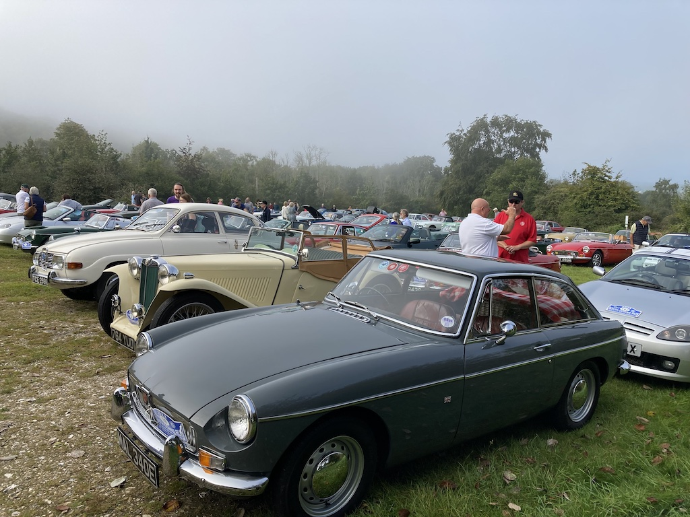
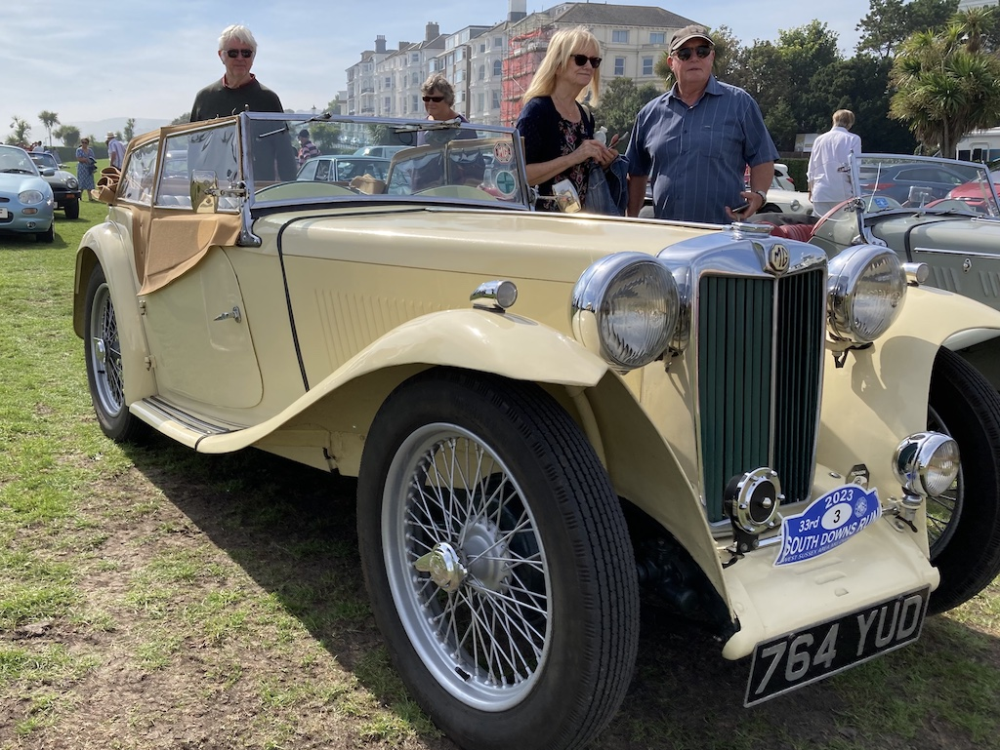

Drive It Day to Parham House - 28th April
 I collected Angela from outside the Methodist Church (in the drizzle) and we drove to Parham House for the WSMGOC Drive It Day run. We were a little late, but there was quite a good turnout, with most people sheltering under the gazebo. After a while the rain eased and we all went into the garden. We took our lunch with us and found a quite, sheltered spot to eat it. Then we wandered around the garden and part of the grounds. Some people also went into the house.
I collected Angela from outside the Methodist Church (in the drizzle) and we drove to Parham House for the WSMGOC Drive It Day run. We were a little late, but there was quite a good turnout, with most people sheltering under the gazebo. After a while the rain eased and we all went into the garden. We took our lunch with us and found a quite, sheltered spot to eat it. Then we wandered around the garden and part of the grounds. Some people also went into the house.
The run, there and back, was only 20 miles.
Sussex Wanderers, Denmans to Chichester Yacht Club - 10th May
So far this year, the weather hasn't been kind and when it was fine we were doing something else! Therefore, up till now the runs have mainly been test runs or local visits, apart from 'Drive It Day' (see above) when it rained.
Today, however, I took the TC on a Wanderers run. Due to the weather, David F-B and I went on the last run in his TR4A. Although the forecast was for showers, the sun was shining this morning and I drove to Lyminster to pick up David and then we went on to Denmans Gardens at Fontwell to meet up with the other Wanderers. That was 25 miles, then we did a 30 mile run, with lots of twists and turns, to Chichester Yacht Club for lunch. Of course, I then had to take David home and return home myself. I drove a total of 92 miles and the car ran well. We had the hood down until we got to the yacht club. It was starting to drizzle as we arrived, so the hood went up. We kept the hood up on the way back, although it didn't start raining until I left David's.
Overall, a good, but tiring outing.
Sussex Wanderers, Warnham to Warnham - 12th July
 We were away in June and so this was the first opportunity to take the TC on a longish run for a couple of months. David F-B drove here in his Rover and then we took the TC to the Sussex Oak at Warnham, near Horsham to meet up with the other Wanderers. We had a short shower on the way, but just kept driving. The run was through some Surrey country lanes, which were quite twisty. The run of about 28 miles brought us back to the Sussex Oak for lunch. I was home by 3:30, having driven the TC for 70 miles.
We were away in June and so this was the first opportunity to take the TC on a longish run for a couple of months. David F-B drove here in his Rover and then we took the TC to the Sussex Oak at Warnham, near Horsham to meet up with the other Wanderers. We had a short shower on the way, but just kept driving. The run was through some Surrey country lanes, which were quite twisty. The run of about 28 miles brought us back to the Sussex Oak for lunch. I was home by 3:30, having driven the TC for 70 miles.
Sussex Wanderers, Ashington to Maplehurst - 9th August
This was the annual Sussex Wanderers barbecue at the White Horse in Maplehurst. During a period of very unsettled weather, it was a dry, mainly sunny day. David F-B couldn't make it, so Marting Greenhalgh joined me as navigator. We met at the Red Lion in Ashington and then did a short-ish run to Maplehurst. There had been another road closure, so the last part was altered.
Since the start and finish were both quite close, we only did a total of 44 miles, but the TC ran well and it was a very good barbecue.
WSMGOC Pub Run, Sir Roger Tichbourne, Alfold Bars - 25th August
It is 20 miles from home to the Sir Roger Titchbourne. It was a sunny day, so it was a good run. Although we were only the second to arrive (the first in a Humber), other MGs soon arrived. There were 20 of us out on the terrace for a good meal and conversation. Then it was another 20 miles home, mainly in sunshine.
Our TC is parked up near the pub, so out of sight. Harvey arrived in his TC and parked near us. The landlady got all the MGs to park on one side, although quite a few had to park in the middle.
South Downs Run
Wow, what a fantastic day. It was the South Downs Run, so Alan and I set off for Whiteways Lodge at 8:15 in the TC, arriving at ten to nine for our spell at marshalling. I registered (we were number 3) and fixed the plate to the front of the car. It was cool and a little misty when we left home, but became very misty on the way so I had to turn on the headlights.
There was an almost constant stream of cars coming in and soon people started setting off on the run. By 10:45 nearly everyone had arrived and quite a few had departed, so there was little need for marshalling and we set off. The route booklet showed 195 entrants, but it seems that a few registered after the booklet went to press, so there were 202 cars, with only a handful of non-MGs. By this time the sun was shining. We stopped at Bramber of a drink, but otherwise only stopped for a loo break.
Meanwhile, Angela and Chis made some picnic lunch, drove to Shoreham and caught the bus to Brighton. From there they took the number 13 to Eastbourne pier. Alan and I arrived just before half past two (the run was 75 miles down some quite slow roads), and Angela and Chis had been there for an hour and a half.
We sat on a bench on the promenade to have our lunch, then looked at the cars and had an ice cream. The sun was slightly hazy, with a light breeze off the sea, which meant that it was very pleasant. We walked towards the pier and at the bandstand Chris and Angela continued on to catch a bus home, while Alan and I walked back to the car.
Apart from a detour to Beachy Head, we followed the A259 along to Shoreham, taking a wrong turn in Newhaven (and needing to turn around) and finding ourselves in a bus lane at Telscombe Cliffs (perhaps I'll receive a fine). We got home at five to six, having driven a total of 131 miles in the TC. It was another hour before Chris and Angela got home.

The video below was taken by Christine as we arrived at the Western Lawns in Eastbourne.